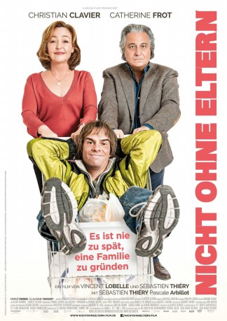

#9933 Nicht ohne Eltern
 
 IMDB-Wertung: 4.7 / 10
IMDB-Wertung: 4.7 / 10  Metascore: 0
Metascore: 0 
Monsieur Prioux versteht die Welt nicht mehr. Bis gestern führte er mit seiner Frau Laurence ein zufriedenes und geruhsames Leben. Die Behaglichkeit hat eines Tages jedoch ein Ende, als auf einmal im Supermarkt dieser seltsame Typ namens Patrick auftaucht. Noch seltsamer wird es als Patrick später auch noch unangemeldet unter ihrer Dusche steht und schließlich sogar behauptet, dass er ihr Sohn sei. Kann nicht sein. Die Priouxs haben keine Kinder! Und doch scheint alles darauf hinzudeuten, dass Patrick wirklich ihr Sohn ist. Handelt es sich bei der absurden Behauptung um einen üblen Scherz? Oder ist Patrick schlicht ein gerissener Betrüger? Die Priouxs stehen vor einem Rätsel. Doch Madame Prioux beginnt zu allem Überfluss, Patrick in ihr Herz zu schließen. Das wird Monsieur Prioux dann doch zu viel und er beschließt zu handeln!
Jahr: 2017
Dauer: 86 Minuten
FSK: 6
Land: Frankreich Studio: Concorde FilmverleihTonspuren: DTS - ,
Untertitel: Deutsch,
Auflösung: 1080p (1920x800) Größe: 6307 MB
Genre: Komödie
Regisseur: Vincent Lobelle, Sébastien Thiery
Drehbuch: Sébastien Thiery, Sébastien Thiery, Pascale Arbillot
Soundtrack: Maxime Desprez, Michaël Tordjman
Darsteller:
 Christian Clavier als André Prioux
Christian Clavier als André Prioux Catherine Frot als Laurence Prioux
Catherine Frot als Laurence Prioux Pascale Arbillot als Sarah
Pascale Arbillot als Sarah- Marie Colapietro als La serveuse
- Bruno Georis als Le vétérinaire
- Albert Jeunehomme als Monsieur Priout, le voisin (uncredited)
- Sébastien Thiery als Patrick Priout
- Hervé Pierre als Jean-François, le médecin
- Claudine Vincent als Jacqueline Paparopoulos
- Jeanne Rosa als La policière
- Benoît Tachoires als Le responsable sécurité
- Eric Larcin als Le client supermarché
- Samanta Borzi als La femme vigile
- Dominique Baeyens als Stéphanie
- Charles Campignion als Le client magasin lits
- Frederic Etherlinck als Le médecin maternité
Datei: X:\2017(N-Z)\Nicht ohne Eltern (2017, FSK6, 1920x800).mkv seit 14.11.2018
Festplatte: HD 2017(A-Z)-2018(A-F)
 Es gibt insgesamt 170 Filme in der Gruppe '2017(N-Z)'
Es gibt insgesamt 170 Filme in der Gruppe '2017(N-Z)'